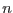

The final output source list comprises all detections of the intermediate emldetect source list that have an equivalent detection likelihood DET_ML above mlmin in total or in at least one pointing. For each valid detection, it gives one summary line with the combined values of all input observations, one per camera, one per camera and energy band, one all-EPIC summary line per valid pointing and one summary line per instrument per valid pointing. In these summary rows per pointing, the column ID_INST includes the observation ID followed by the usual 0 which marks summary rows. They are calculated by edetect_stack in the same way as the summary rows by emldetect, but they are not necessarily identical to the results of a separate emldetect run on the single pointing. Figure 3 shows a sketch of a stacked source list. A complete list of the table columns is given in Table 2 in Section 8. Since the final stacked source list is created from the intermediate emldetect product and detections of low likelihood are rejected, the detection identifiers ML_ID_SRC may have gaps, and the maximum ML_ID_SRC may be larger than the total number of valid detections.
|  | Pipeline energy bands [keV] | ||
| 1 | 1 | 2 | 0.2-0.5 0.5-1.0 |
| 2 | 2 | 3 | 0.5-1.0 1.0-2.0 |
| 3 | 3 | 4 | 1.0-2.0 2.0-4.5 |
| 4 | 4 | 5 | 2.0-4.5 4.5-12.0 |